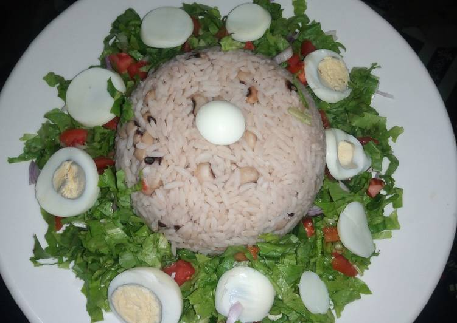

The shinkafa recipes
This is rice which is known as shinkafa in hausa tradion

The Ingredients of the food
- Rice
- Beans
- Oil
- Salads
- Cucumber
- Cabbage
- pepper
- onion
The steps
- Boil water
- pour beans
- cook the beans for half
- Pour the rice
- Cut cucumber, cabbage and Salad
- finish the cooking first
- Put the cut recipes in the cooking